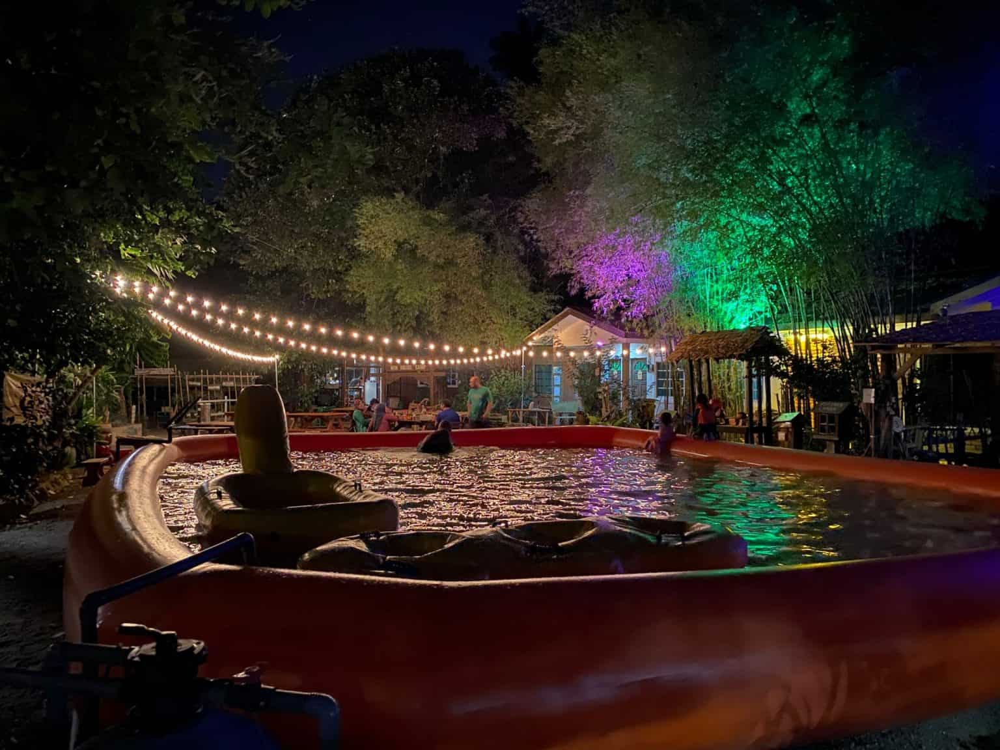
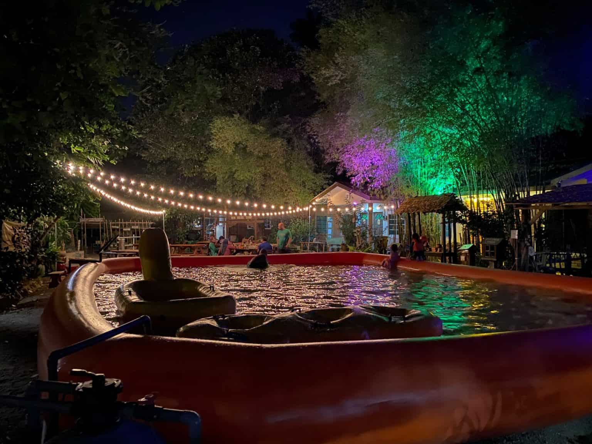
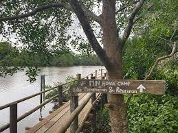
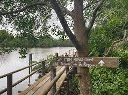

HOME
HOME ABOUT US
ABOUT US TOURIST PACKAGE
TOURIST PACKAGE SERVICE
SERVICE FACILITIES
FACILITIES EVENTS
EVENTS CONTACT
CONTACTPlaces to visit
Min House Camp
 


Min House Camp at Kubang Kerian, located on the outskirts of Kota Bharu town, guarantees every guest
a magnificent nature experience, appealing mostly to those who like finding flora and wildlife in the outdoors. The
camp's complex area includes chalets, multipurpose halls, a bee farm, a firefly garden, an organic farm, a little
petting zoo, and even water sport activities like as kayaking, river bathing, fishing, and clam digging.
One of the most intriguing things to do here is to go firefly gazing at night. You will be taken on a boat excursion
and will halt in a location where you can see stunning fireflies that naturally light up the landscape! The boat journey
for firefly gazing begins at 8 p.m. and runs until 11 p.m. Aside from that, tourists may participate in a variety of
cultural activities such as handicraft making, culinary courses, traditional games, and seeing cultural performances such
as wayang kulit (shadow play) and dikir barat (a Kelantanese traditional dance).
Jambatan Terapung
 


The community of Kampung Pulau Tengah is located in Kubang Kerian, Kelantan. Initially, neither international
tourists nor the local people were familiar with this settlement. The Jambatan Terapung Kubang Kerian along the Denai Sungai
Pengkalan Datu, on the other hand, has grown in popularity and drawn the attention of travellers. This floating bridge was
launched by the Minister of Environment and Water, YB. Dato' Sri Tuan Ibrahim bin Tuan Man, on October 24, 2020. It was
erected to commemorate the Hari Alam Sekitar Negara 2020 (HASN) with the theme "Alam Sekitar Tanggungjawab Bersama". This
bridge is built of high-quality wood and supported by nibong, giving the impression that it is floating on the surface of
the river. It is over a km long and begins at the rear of Hospital Universiti Sains Malaysia and finishes at Min House Camp
in Kubang Kerian. This spot, which went popular on social media, has also become a new recreation and eco-tourism destination
in the state of Kelantan, assisting local communities in earning a living.